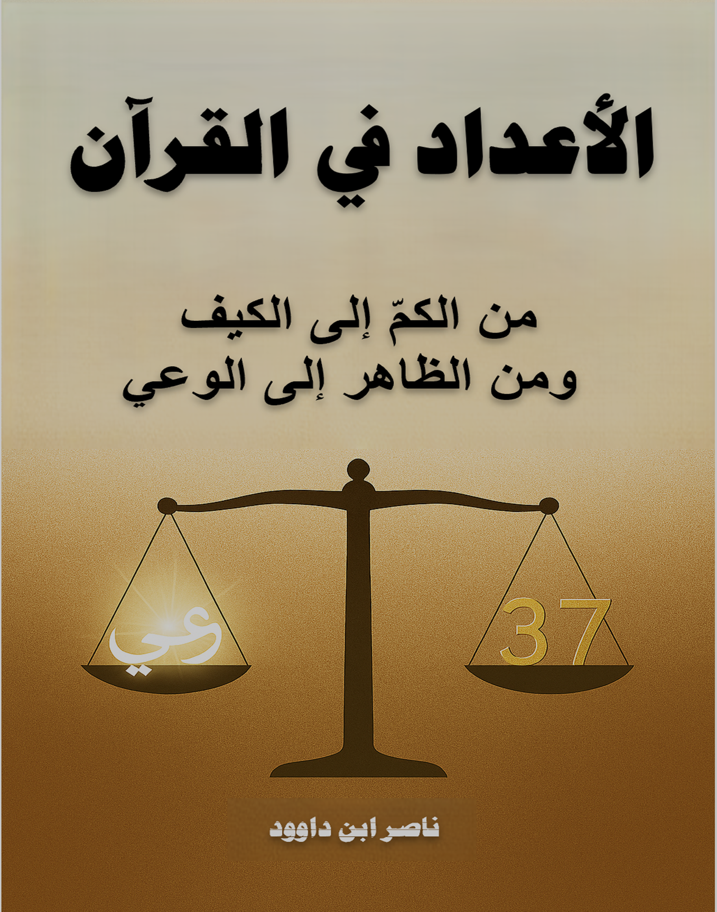

وصف الكتاب
يقدم هذا العمل رحلة استثنائية في عمق العدد القرآني والوعي الإنساني، حيث يتجاوز التفسير التقليدي إلى قراءة رمزية في فقه العدد القرآني، يجمع بين العلم والروح، اللغة والكون.
الكتاب ليس مجرد دراسة عددية، بل هو رحلة وجودية تهدف إلى تحرير العدد من حصره العددي، وتحويل القراءة من فهم الكم إلى فهم الكيف عبر مرآة القرآن.
الرؤية المنهجية
يعتمد الكتاب على قراءة رمزية للعدد في القرآن، حيث يصبح كل عدد نافذة على الوعي، وكل رقم مرآة للوجود. يقدم رؤية متكاملة تربط بين البيان والميزان، مفتتحًا أبوابًا جديدة في فهم العلاقة بين الإنسان والقرآن من خلال الأعداد.
يجمع الكتاب بين التحليل العددي العميق والبعد الروحي الأصيل، مقدمًا منهجية متكاملة لفهم القرآن كمرآة للذات والكون من خلال نظامه العددي.
أبرز مميزات الكتاب:
- رحلة في عمق العدد القرآني والوعي الإنساني
- قراءة رمزية في فقه العدد القرآني
- اتحاد بين العلم والروح، العدد والكون
- تحليل العلاقة بين البيان والميزان
- رؤية متكاملة لفهم القرآن كمرآة للذات من خلال الأعداد
المحاور الرئيسية:
- من الحرف إلى العدد: رحلة الإنسان الروحية
- فقه العدد القرآني: مفاتيح الميزان الإلهي
- العدد كتشريع: من النظام إلى الوعي
- العدد كرمز كوني: من الخلق إلى التجلي
- الأعداد الكبرى: من الفرد إلى الجماعة
- العدد كوعي روحي: من العدّ إلى الشهود
فهرس المحتويات
الخاتمة الكبرى: عودة الدائرة إلى مركزها
في ختام هذه الرحلة الاستثنائية، يدعو الكتاب إلى اكتمال الوعي والوجود، حيث يتماهى الإنسان مع الكون في تسبيحٍ واحد. حين تفهم النفس حقيقتها، يزول الفاصل بين القارئ والكتاب، بين الإنسان والوجود، بين «هو» و» أنا».
هذا الكتاب دعوة لكل قارئ لخوض رحلة تدبّر عميقة في مرآة القرآن من خلال الأعداد، ليتذكّر أن كل شيء في هذا الوجود هو عدد مقدّر في ميزان الحكمة الإلهية.
لمن هذا الكتاب؟
- الباحثون في الدراسات القرآنية: المهتمون بالإعجاز العددي والبياني
- المهتمون بالوعي الروحي: الراغبون في رحلة داخلية عميقة
- علماء الرياضيات والفيزياء: الباحثون عن رؤية جديدة للعدد في القرآن
- المفكرون والفلاسفة: المهتمون بفلسفة العدد والوجود
- عموم القراء: الراغبون في فهم أنفسهم عبر مرآة القرآن العددي